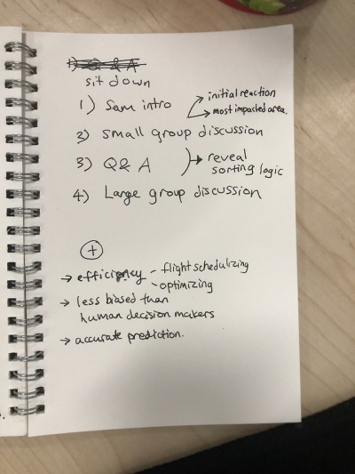
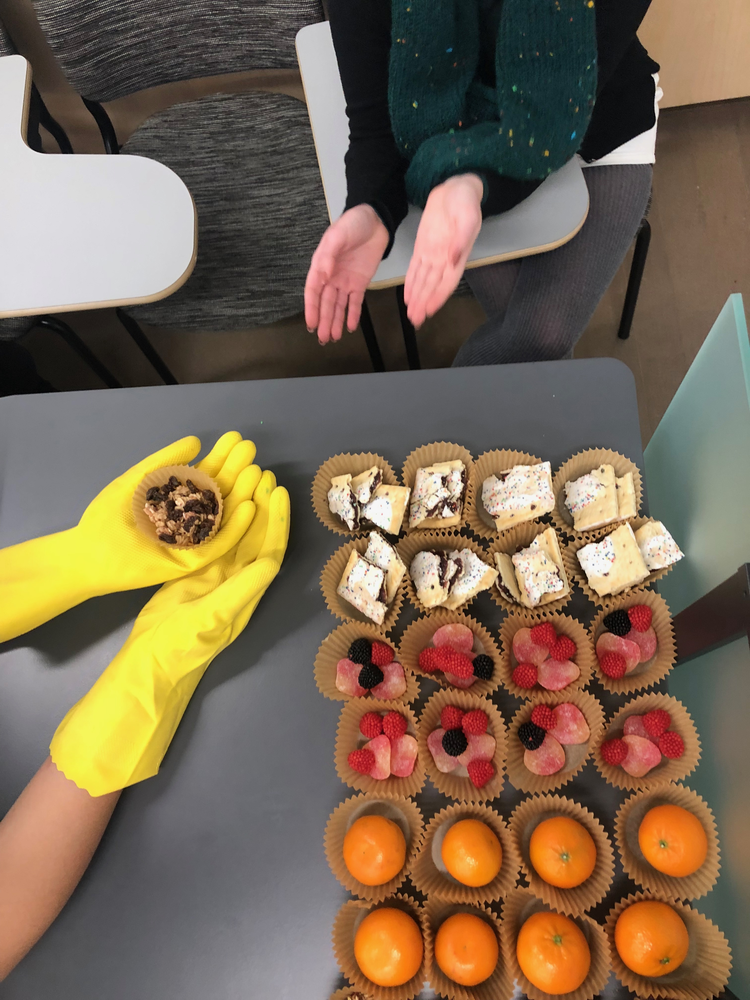
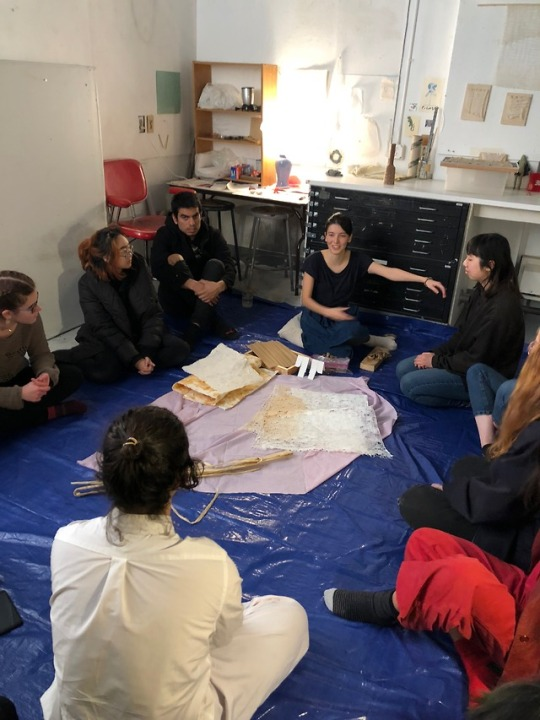

how 2 run a food for thought event
- confirm your speaker’s availability
- meet with your speaker the week before to design the event together
- understand your speaker’s intentions and content

- present them with examples and possible structures for the event
- e.g. 10 min buffer, 15 min presentation, 30 min discussion, 5 min buffer
- e.g. performance, lecture, workshop, participatory art, timed discussion
- brainstorm possible spaces and food
- e.g. Friedman, Nature Lab, Printmaking, Page-Robinson, Ewing House, Carr Haus
- finalize event logistics, including payment for food and props
- publicize event 1 or 2 days before
- on facebook
- by email
- personally to beloved friends
- gather snacks and/or cook together (esp with your speaker) the night before

- remind everyone on the day
- post progress photos (cooking together) on the facebook event
- email everyone on the morning
- bump into your friends or text them
- set-up and do a run-through 30 minutes before the event
- patiently wait for your audience who usually arrive a few minutes late
